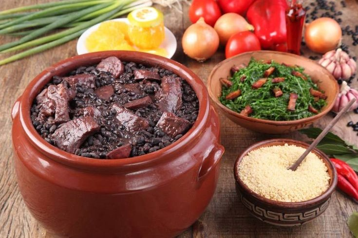
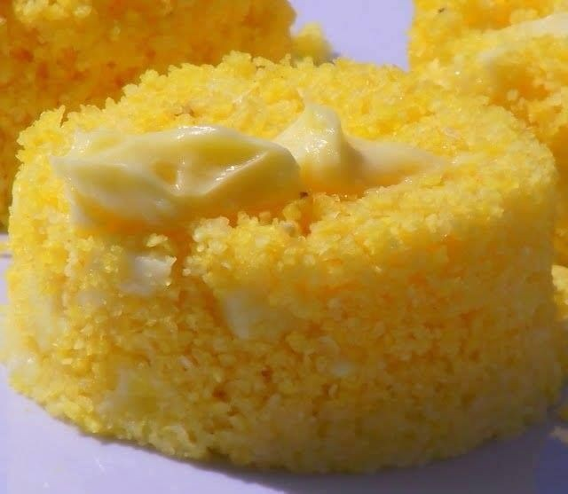

Baião de Dois
Ingrediente
Modo de Preparo
Cozinhe o feijão somente na água e sal. Cozinhe o arroz normalmente, de forma que fique branco e soltinho. Aqueça uma frigideira grande e coloque a manteiga. Frite o pimentão, a cebola e por último o alho. Coloque o cheiro verde e em seguida o feijão sem o caldo. Deixe refogar um pouco. Acrescente o arroz, misture bem e adicione 2 conchas do caldo do feijão. Rale aproximadamente meia xícara do queijo e o restante, corte em lascas e acrescente à mistura na frigideira. Vá misturando tudo delicadamente de modo que os ingredientes se incorporem e fique bem úmidos. Sirva em uma travessa de barro, salpique com cheiro verde e o queijo que você ralou. Sirva em seguida com paçoca ou carne de sol.
Moqueca
Ingrediente
Modo de Preparo
Limpe os camarões e tempere com sal e o suco de limão. Refogue todos os temperos por 15 minutos no azeite-de-dendê. Acrescente os camarões e cozinhe por 5 minutos com a panela tampada. Por último, acrescente o leite de coco. Sirva com arroz branco.
feijoada
Ingrediente
Modo de preparo
Coloque as carnes de molho por 36 horas ou mais, vá trocando a água várias vezes. Coloque para cozinhar passo a passo, primeiro as carnes duras, em seguida as carnes moles. Quando estiver mole, coloque o feijão, e retire as carnes. Finalmente tempere o feijão. Sirva com couve, arroz branco, laranja e farofa
tacacá
ingredientes
Modo de preparo
Coloque o tucupi para ferver, depois de levantar fervura comece a colocar a pimenta de cheiro, a cebola, a chicória, a cebolinha e o alho; Deixe ferver mais um pouco. Enquanto isso, prepare a goma de mandioca; Coloque mais ou menos um litro de água numa panela e ponha no fogo. É preciso derreter a goma em um copo com água antes de jogá-la na panela. E só um detalhe: não pode parar de mexer. Em poucos segundos a mistura engrossa e fica nessa consistência liguenta; Deixe descansando e siga novamente para o caldo do tucuxi; Desligue o fogo e bata uma parte dele no liquidificador com as verduras todas, depois devolva à panela e misture. Por fim, é só colocar as folhas de jambu e servir com os acompanhamentos, como o camarão e a cebola picada.
Coxinha

ingredientes
Massa
Recheio
Modo de Preparo
Em uma panela, cozinhe o peito de frango em água e sal. Retire escorra e deixe esfriar. Depois desfie o frango e tempere com a cebola a salsinha, sal e a pimenta do reino, reserve. Para fazer a massa leve ao fogo, a água, junte o caldo de galinha e o óleo até ferver. Coloque a farinha de trigo de uma vez só, mexendo sem parar, e cozinhe até desgrudar do fundo da panela. Transfira a massa para uma superfície lisa e sove até ficar homogêneo. Misture o frango desfiado com o catupiry. Pegue uma porção da massa, abra na mão e recheie. Feche e molde a coxinha. Passe nos ovos batidos, na farinha de rosca e frite em óleo quente até dourar.
cuscuz
ingredientes
Modo de Preparo
Em um recipiente, adicione o fubá e umedeça com a água e acrescente o sal. Deixe descansar por 5 minutos. Em seguida coloque água na panela. Transfira o fubá para a panela. Cozinhe por cerca de 10 minutos, até começar a exalar aroma e a soltar das laterais da forma.
acarajé
ingredientes
Modo de Preparo
Coloque os feijões inteiros num processador de alimentos e bata por alguns segundos para quebrar os grãos. Coloque os feijões num recipiente e cubra com água. Deixe de molho por no mínimo 12 horas. Agite os feijões com uma colher e com uma peneirinha vá retirando todas as cascas que se desprendem dos feijões. Depois de retirar bastante as cascas, lave os feijões sob a água corrente. Descasque as cebolas e corte-as em pedaços. Num processador, coloque os feijões e as cebolas. Bata por 3 minutos, ou até obter uma pasta lisa e uniforme. Retire toda a pasta do processador e coloque dentro de uma panela grande e funda. Com uma colher de pau, bata a massa do acarajé até que a massa triplique de volume. Esse processo é bastante demorado mas é importantíssimo para a fermentação. Coloque o óleo, o azeite de dendê, e a cebola com casca numa panela média e leve ao fogo alto para esquentar. Com duas colheres de sopa, modele os acarajés: encha uma das colheres com a massa, passe de uma colher para a outra até que a massa fique com formato de bolinho. Coloque os bolinhos no óleo bem quente e frite por 3 minutos de um lado. Com uma escumadeira, vire os bolinhos e deixe fritar até que fiquem dourados. Retire os bolinhos com uma escumadeira e coloque sobre papel absorvente. Corte os bolinhos ao meio e recheie com vatapá. Coloque o camarão seco dentro do acarajé e feche.
pão de queijo
ingredientes
modo de preparo
Retire o soro do creme de leite e misture em uma tigela com o polvilho. Depois, acrescente os queijos ralados. Mexa a massa com as mãos até virar uma massinha bem lisa (se estiver grudando nas mãos, coloque mais polvilho). Faça bolinhas de pão de queijo e coloque em uma forma untada com manteiga. Coloque no forno por cerca de 20 minutos ou até dourar. Está pronto